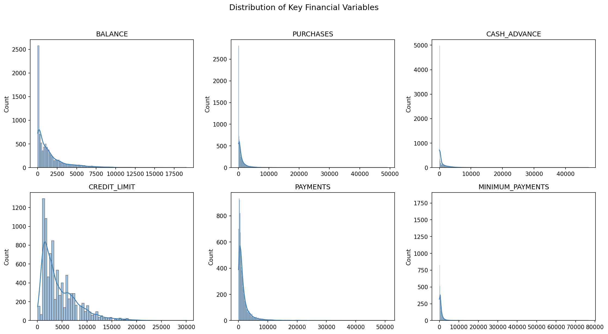
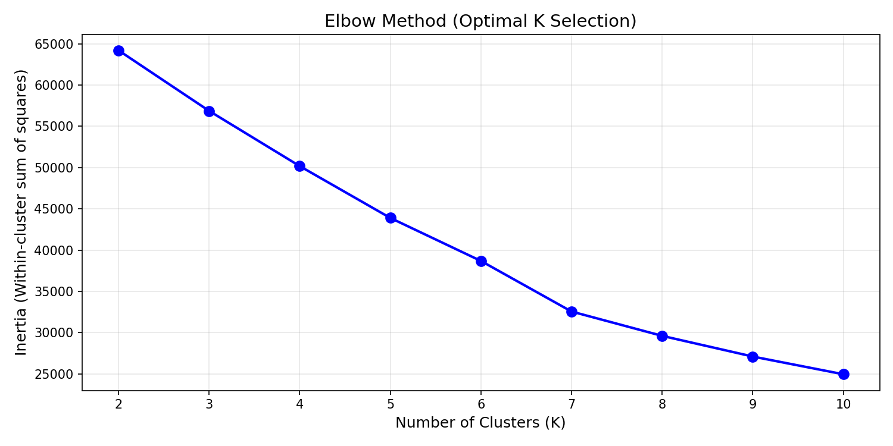

Project 04 · B2B SaaS · Predictive ML
Binary classification model ranking B2B leads by predicted conversion probability — replacing manual priority tiers with a machine-learned probability score from 0 to 100%.
The rule-based lead scoring system in Project 1 assigns priority tiers — Low, Medium, High. But a tier label doesn't tell a sales rep how likely a lead is to convert, only that it should be called before others.
This project replaces tier-based prioritization with a machine learning model that outputs a probability score for each incoming lead, so reps can sort their daily queue by predicted conversion likelihood rather than a manual label.
150 B2B leads from the SentinelSec pipeline (28 historical + 122 synthetic to reach modeling scale), each with intake signals and known conversion outcomes.
Lead_Score_Cal and Company_Size_Num have a 0.96 correlation — near-perfect collinearity. The scoring formula from Project 1 weights company size at 60/100 points, making the score a mathematical derivative of company size. Using both would feed the model the same information twice.
Decision: Drop Company_Size_Num, keep Lead_Score_Cal (continuous, 51 unique values vs 3 ordinal levels).
Majority class collapse — predicted zero conversions across the entire test set. A known phenomenon when class imbalance meets limited feature signal.
Recommended. Avoids collapse by learning non-linear decision boundaries. Better ranking of converted leads above non-converted ones.


The ML model independently confirmed the same signal the rule-based scoring system weighted most heavily in Project 1 — without being told the scoring formula. This cross-validates both approaches through entirely different methodologies.
Negative coefficient in Logistic Regression — longer wait times decrease conversion probability. This provides data-backed evidence for the 24-hour SLA target built in Project 1.
The model scores every lead by predicted conversion probability. A sales rep opening their dashboard each morning sorts by this column — highest probability first — and calls accordingly. No manual judgment required.
Top 5 of 10 shown. All 200+ enterprise accounts with lead scores 86–95.
Trained on 150 leads with a 30-row test set. Methodology is sound; scale is portfolio-appropriate. A production deployment would require 300–500 historical conversions and monthly retraining as new outcomes accumulate. The pipeline supports this with minimal code changes.
The Logistic Regression collapse is documented transparently — it demonstrates understanding of model behavior on imbalanced data, not a flaw in the approach.